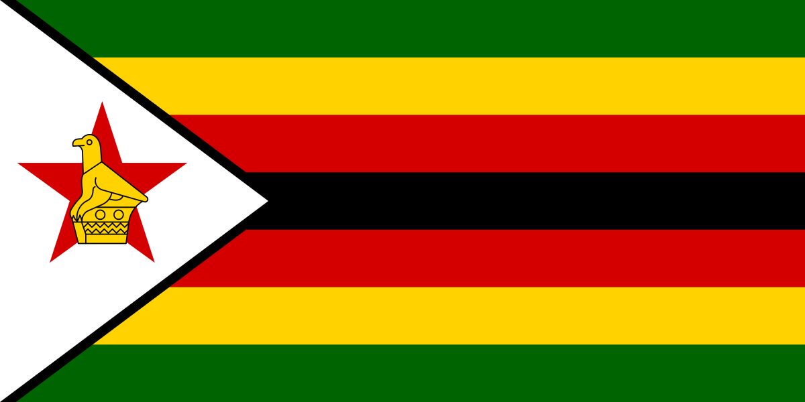
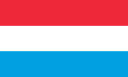
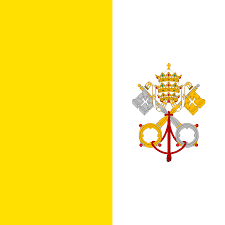
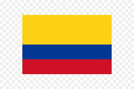
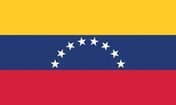

Paises
Feito por Felipe 4D
Zimbabwe
Geografia » Continentes » África » Por Felipe aluno Da Berenice Ludwig
A República do Zimbábue (em inglês: Republic of Zimbabwe) é um país localizado à África Meridional, com um território de 390.580 km², dimensões um pouco maiores que as do estado de São Paulo. A população do país é de cerca de um milhão e meio e tem como capital e principal cidade Harare (antiga Salisbury).
Zimbábue divide suas fronteiras com Zâmbia a norte, Moçambique a leste, Namíbia e Botswana a oeste e a África do Sul ao sul. A língua oficial é o inglês, apesar da população zimbabuana utilizar diversas línguas regionais na comunicação diária, sendo as principais do país a língua xona e o ndebele (sindebele). A maioria dos habitantes do país, 75%, seguem o cristianismo, o restante sendo seguidores de religiões africanas tradicionais e do islamismo,
A população de Zimbábue é em sua maioria da etnia xona 71% (presente também em Moçambique, Zâmbia e Botswana), havendo 16% da população da etnia ndebele (matabele); outros 11% são de várias etnias, restando ainda 1% de brancos descendentes de europeus, e 1% de asiáticos, especialmente indianos.
Implementos e ferramentas da Idade da Pedra foram encontradas em diversas áreas de Zimbábue, evidências de uma civilização primitiva. O mais impressionante desses sítios é o "Grande Zimbábue" (em língua Xona, Zimbábue significa "casa de pedra"), ruínas que deram nome ao país. Evidências sugerem que estas estruturas em pedra foram construídas entre os séculos IX e XIII por africanos nativos que tinham contatos com os centros comerciais na costa sudeste. No século XVI, os portugueses tentam a colonização do centro-sul da África, mas o interior permanece praticamente intocado pelos europeus até a chegada dos exploradores, missionários, caçadores de marfim, e comerciantes 300 anos mais tarde. Enquanto isso, ocorrem migrações em massa de povos nativos, e o território é ocupado pela etnia Xona, relacionada aos Zulus. Em 1888, Cecil Rhodes obteve a concessão dos direitos minerais da área, que se torna esfera de influência britânica. Em 1895, administrada pela Companhia Britânica da África do Sul, é formalmente nomeada Rodésia do Sul em homenagem a Rhodes.
Em 1923, a Rodésia do Sul é anexada pelo Reino Unido. Embora nunca administrada diretamente pela metrópole, esta sempre manteve o direito de intervir nos assuntos locais. No ano de 1953, a Rodésia do Sul se junta à Rodésia do Norte e à Niassalândia, buscando reunir recursos e mercados. A federação foi dissolvida no final de 1963 e Rodésia do Norte e Niassalândia tornam-se os estados independentes de Zâmbia e do Malawi em 1964. O primeiro-ministro Winston Field, acusado de não se mover rápido o suficiente para obter a independência da Rodésia do Sul é substituído por seu vice, Ian Smith, que defendia os interesses da comunidade branca de sul africanos bôeres e britânicos. Smith irá declarar a independencia da Rodésia, um estado de reconhecimento limitado, onde um regime semelhante ao apartheid sul africano irá existir até 1979.
Finalmente, em 1980, um governo representativo da maioria dos zimbabuanos, liderado pelo oposicionista Robert Mugabe assume o poder. Boa parte da comunidade branca irá deixar o país ao longo dos anos, e Mugabe vai se consolidando no poder, tornando-se um ditador corrupto. No início do século XXI, Zimbábue ainda permanece sob controle de Mugabe, mas a economia está destruída por uma série de decisões equivocadas do governo, que causam uma hiperinflação. Pressões para a saída de Mugabe obtém como resultado um governo conjunto deste com o líder oposicionista, Morgan Tsvangirai, situação que dura até os dias atuais.
Curiosidades
Capital= Harare
Moeda= Dolar Americano
Continente=Afica
Produto interno Bruto=28,37 USD (2021)"Banco mundial"
População=15,99 milhões (2021)
Idomas principais=Xona, Ingles, Tshwa Languangem, Xhosa, Nianja, Soto do Sul, Tswana, Venda, Tsonga, Nbebele do Norte, Zinbawean English e etc
Uma camera do Zimbabwe ao vivo
Alemanha
"A Alemanha é o país mais populoso (sem contar a Rússia) e rico da Europa, tendo grande relevância nas decisões regionais e mundiais nos mais variados níveis: política, economia, aspectos sociais, entre outros."
A Alemanha é um país localizado na região central do continente europeu e é o país mais populoso da Europa Ocidental. Faz fronteira, ao norte, com o Mar do Norte, Báltico e Dinamarca; a oeste, com Holanda, Bélgica, Luxemburgo e França; ao sul, com Suíça e Áustria; a leste, com República Tcheca e Polônia.
O relevo alemão conta com planaltos e planícies. As planícies ocorrem, em geral, na faixa litorânea. As áreas de planaltos ocorrem na região sul do país, próximo da fronteira com a Áustria, sendo o Monte Zugspitze o ponto mais elevado, com 2.996 metros de altitude.
Sobre o clima do país, a Alemanha encontra-se na zona climática temperada do norte, sendo o clima temperado predominante na região. Apresenta as quatro estações do ano bem definidas. O verão alemão costuma ter temperaturas em torno de 22 oC. Já o inverno possui média de temperatura em torno dos 5 oC, podendo variar para menos.
A vegetação predominante do território alemão são as florestas de coníferas, vegetação típica de grande parte da Europa e formada por pinheiros e pouca variação de espécies. Há presença também dos campos, vegetação aberta, com gramíneas e poucas árvores.
A hidrografia alemã não é grandiosa, havendo poucos rios de grande importância. Dois dos principais rios europeus passam pelo território, o Reno e o Danúbio. Outro rio de importância na Alemanha é o Elba. Já o norte da Alemanha é banhado pelos mares do Norte e Báltico.
Demografia alemã
A Alemanha possui a maior população dentre os países europeus, com cerca de 83 milhões de habitantes. Sendo assim, sua densidade demográfica é bastante considerável, sendo de 232,24 habitantes/km².
Um aspecto de relevância sobre a população alemã está em torno do índice de imigrantes no país: são 10 milhões de pessoas, segundo informações da União Europeia, ou seja, o equivalente a 10% do total da população. Entre os países europeus, a Alemanha é o país que mais recebe migrantes.
A população alemã é predominantemente urbana, com mais de 80% da sua população morando nas cidades. Berlim, Munique e Frankfurt são as maiores cidades do país e as mais importantes. Berlim é a maior e mais importante cidade do país, além de ser capital. Frankfurt, além de ser a segunda maior cidade, é um centro financeiro mundial.
Economia da Alemanha
A Alemanha é a quarta maior economia do mundo, é caracterizada pela sua força inovadora, orientação para a exportação e uma forte classe média. O Governo Federal quer estabelecer uma economia social-ecológica de mercado. A Alemanha é a maior economia da União Europeia. Desde 2013, a UE é composta por 28 Estados.
Luxenburgo
" Luxemburgo é um país europeu localizado na porção ocidental do continente e tem como capital a cidade de Luxemburgo. Seu pequeno território faz divisa com França, Bélgica e Alemanha. De clima ameno e terrenos de altitude média, o país conta com uma população de 626 mil habitantes, que revela um PIB per capita muito elevado, tornando Luxemburgo, nesse aspecto, um dos países mais ricos do mundo.
Resumo sobre Luxemburgo
Luxemburgo é um pequeno país da Europa Ocidental que faz fronteira com França, Alemanha e Bélgica.
Sua capital é a cidade de Luxemburgo.
Conta com 626 mil habitantes e uma população formada por um contingente significativo de migrantes.
"É um país altamente desenvolvido e com elevado custo de vida. Seu PIB per capita é um dos mais elevados do mundo
Luxemburgo é o pais mais rico do mundo.
O Grande Ducado de Luxemburgo (em luxemburguês: Groussherzogtum Lëtzebuerg; em francês: Grand-Duché de Luxembourg; em alemão: Großherzogtum Luxemburg) é um país independente, sem saída para o mar, localizado na Europa ocidental. A capital do país é a cidade de Luxemburgo, e sua área é de 2,586 km², equivalente à metade da área do Distrito Federal. A população é de 516 mil habitantes, originários da mistura entre franceses e alemães. Há ainda importantes minorias de portugueses, italianos e belgas. A principal religião do país é o cristianismo, de segmento católico. Como membro da União Europeia, sua moeda é o Euro. O país divide limites com a Bélgica e oeste, França a sudoeste e Alemanha a leste.
A língua nacional de Luxemburgo é o luxemburguês, uma mistura de elementos antigos holandeses, alemães e franco. A língua oficial do serviço público, a lei, e o parlamento é o francês, embora o debate parlamentar e processos judiciais são realizados principalmente em luxemburguês e arquivos de casos de polícia são registrados em alemão. O alemão é o idioma principal da imprensa. Francês e alemão são ensinados nas escolas, com o alemão falado principalmente no nível primário e Francês no ensino secundário. Além disso, o Inglês é ensinado nas escolas de ensino médio. A maioria dos luxemburgueses, como resultado, fala pelo menos um pouco de Inglês.
Luxemburgo é uma monarquia constitucional subordinada a um governo parlamentar. Sob a Constituição de 1868, o poder executivo é exercido pelo Grão-Duque e pelo Conselho de Governo (gabinete), que inclui o primeiro-ministro, que atua como chefe de governo. O primeiro-ministro é o líder do partido político ou coligação de partidos que ocupa a maioria dos assentos no parlamento, conhecido como Câmara dos Deputados.
Depois de 400 anos de dominação por várias nações europeias, Luxemburgo conquistou o estatuto de Grão-Ducado em meio ao Congresso de Viena, a 9 de junho de 1815. Embora os luxemburgueses considerem 1835 o seu ano de independência (celebração do Tratado de Londres), o país não tinha autonomia política até 1839. Em 1867, Luxemburgo foi reconhecido como estado independente e garantiu sua neutralidade perpétua. Depois de ser ocupado pela Alemanha, nas duas guerras mundiais, Luxemburgo abandonou a neutralidade e se tornou um membro fundador da Organização do Tratado do Atlântico Norte (OTAN), em 1949. É também um dos seis membros originais da União Europeia (UE), formada em 1951, a partir da Comunidade Europeia do Carvão e do Aço (CECA).
O soberano atual, o Grão-Duque Henri, sucedeu seu pai, o Grão-Duque Jean a 7 de outubro de 2000, depois do anúncio de Jean de abdicar em dezembro de 1999, após um reinado de 35 anos.
Vaticano
O Vaticano é um país localizado na Europa. Ele é a sede da Igreja Católica. A fundação do Vaticano ocorreu em 1929 por meio do chamado Tratado de Latrão.
Geograficamente, o Vaticano é um enclave inserido dentro do território da Itália. A sua população aproximada é de 800 habitantes. A economia do Vaticano está fortemente ancorada no turismo. O país possui a sua cultura voltada para os rituais do catolicismo.
Nome oficial: Estado da Cidade do Vaticano.
História do Vaticano
A história da fundação do Estado do Vaticano remonta ao ano de 1929, por meio do chamado Tratado de Latrão. Esse tratado reconhecia a soberania do Vaticano por parte da Itália, ao mesmo tempo que indenizava os italianos pelas perdas territoriais sofridas para o Estado do Vaticano, que é a sede da Igreja Católica. Desde então, o Vaticano é o centro das decisões da Igreja Católica no mundo, abrigando, ainda, a residência oficial do papa.
Etimologia de Vaticano
O nome do Vaticano é uma referência a uma das colinas que estão localizadas na cidade de Roma (Itália). A origem dessa nomenclatura envolve figuras mitológicas do povo etrusco, que habitava a península italiana em tempos remotos, e remete à ideia de nascimento dos seres humanos.
Geografia do Vaticano
Geograficamente, o Vaticano é um enclave sem saída para o mar que está localizado na porção norte da cidade italiana de Roma, a capital da Itália. O Vaticano é o menor país do mundo em extensão territorial, com cerca de 44 hectares. O país é totalmente formado por paisagens construídas pelo homem, com destaque para as construções da Igreja Católica e também para os chamados Jardins do Vaticano. O clima local é tipicamente mediterrânico, com verões mais quentes e invernos mais amenos.
Brazil
História do Brasil não possui um marco inicial bem definido. Não obstante, tradicionalmente, existe uma datação recorrente sobre a chegada dos portugueses com Pedro Álvares Cabral, em 22 de abril de 1500, à região costeira de onde hoje é a Bahia. Seria esse então o “descobrimento do Brasil”. No entanto, cabe ressaltar que se trata da descoberta dos portugueses. Diversos grupos étnicos já habitavam o território que veio a ser o Brasil muito antes de qualquer europeu desembarcar nele.
O Brasil é o resultado histórico de diversos projetos distintos que se sucederam em uma delimitação geográfica específica. Primeiro tratava-se de um projeto de conquista; depois, um projeto de colonização; já no século XIX, um projeto de Império e de constituição de um Estado-nação; e, por fim, um projeto de Brasil República, que é o que se tenta manter até hoje.
Nossos hinos, bandeiras, brasões, emblemas, palavras de ordem, e tudo aquilo que nos remete à identidade nacional, dizem respeito a essa construção. Ser patriota é ser adepto de um projeto de nação, que muitas vezes diverge de outros projetos que também estão em construção. Portanto, seria mais preciso referirmo-nos ao processo da chegada dos portugueses como a invenção do Brasil, da qual se sucederam projetos diferentes.
Colombia
Antes da chegada dos espanhóis às Américas, a região onde hoje está Colômbia era habitada por várias tribos indígenas que haviam atingido um bom nível de desenvolvimento, destacando-se a tribo muiscas, conhecidos também como chibchas.
Os primeiros espanhóis a pisarem em terras colombianas foram Alonso de Ojeda e João da Cosa em 1499. Posteriormente, várias expedições passaram pela região litorânea, até que, em 1525, foi fundada a primeira cidade da Colômbia: Santa Maria. Cartagena foi fundada oito anos depois, em 1533. Em 1538, Gonzalo Jiménez de Ojeda, após derrotar os índios chibchas, fundou a cidade de Santa Fé de Bogotá, e deu um nome ao país que se formava: Nova Granada. A região, rica em minerais, esteve sempre na mira dos piratas (corsários), e anos depois, dos franceses e ingleses.
Até 1717, a região da então Nova Granada era dependente da administração de Lima, no Peru. A partir desse ano, Bogotá passou a ser a capital de um novo vice-reinado, o vice-reinado de Nova Granada, que agregava os territórios correspondentes aos atuais Panamá, Equador, Venezuela e Colômbia.
Em 1811, Simón Bolívar, militar e político, proclamou a independência da então Nova Granada. Devido à resistência dos espanhóis, somente em 1819, foi criada a República da Colômbia, foi promulgada a primeira constituição, e Simón Bolívar foi declarado presidente. Em 1821, a região era chamada de Grã-Colombia, sendo que a liderança dessa grande área era de Simón Bolívar.
Venezuela
Venezuela (pronúncia espanhola: [be.neˈswe.la]), oficialmente República Bolivariana da Venezuela (em castelhano: República Bolivariana de Venezuela), é um país da América localizado na parte norte da América do Sul, constituído por uma parte continental e um grande número de pequenas ilhas no Mar do Caribe, cuja capital e maior aglomeração urbana é a cidade de Caracas. Possui uma área de 916 445 km², sendo o 32º maior país no mundo em território. Suas fronteiras são delimitadas a norte com o Mar do Caribe, a oeste com a Colômbia, ao sul com o Brasil e ao leste com a Guiana, com quem mantém disputas territoriais. Através das suas zonas marítimas, tem soberania sobre 71 295 km² de mar territorial, 22 224 km² na zona contígua, 471 507 km² do Mar do Caribe e o Oceano Atlântico sob o conceito de zona económica exclusiva, e 99 889 km² de plataforma continental. Esta área marinha faz fronteira com treze estados soberanos, sendo Trinidad e Tobago, Granada, São Vicente e Granadinas, Santa Lúcia e Barbados alguns deles. Sua população é estimada em 28 067 000 habitantes[1] e a capital nacional é Caracas.
Coprigt ©️ todos os direitos reservados para Felipe Guimarães dos Santos e Berenice Ludwig